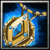
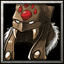
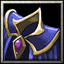
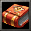
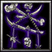
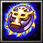

| Qualidade | Inferior | Normal | Superior | Excepcional | Elite |
|---|---|---|---|---|---|
| Arma* | +4 Ataque | +8 Ataque | +12 Ataque | +16 Ataque | +20 Ataque |
| Escudo (50%) | 4 Bloqueio | 8 Bloqueio | 12 Bloqueio | 16 Bloqueio | 20 Bloqueio |
| Armadura Leve | +5 Proteção +1 Esquiva | +10 Proteção +2 Esquiva | +15 Proteção +3 Esquiva | +20 Proteção +4 Esquiva | +25 Proteção +5 Esquiva |
| Armadura Média | 10 Proteção | 20 Proteção | 30 Proteção | 40 Proteção | 50 Proteção |
| Armadura Pesada | 20 Proteção -1 Esquiva | 30 Proteção -2 Esquiva | 40 Proteção -3 Esquiva | 50 Proteção -4 Esquiva | 60 Proteção -5 Esquiva |
| * o jogador pode escolher qualquer arma comum no momento da compra; armas de Magos (geralmente cajados) ocupam as duas mãos e aumentam o ataque mágico ao invés de físico. Requisitos Qualidades Inferior/Normal/Superior/Excepcional/Elite requerem Nível de Personagem mínimo de 1/3/5/7/9 para serem equipados. Armaduras Pesadas requerem Força mínima de 1/2/3/4/5 para serem equipadas. Escudos requerem Perícia com Escudos para serem utilizados. | |||||
| Amuletos Mágicos | ||
|---|---|---|
| Pedra da Vitalidade | Vida +8 |
| Talismã Místico | Mana +5 |
| Anel da Precisão | Precisão +1 |
|  | Talismã da Evasão | Esquiva +1 |
| Manopla Reforçada | Ataque +3, Ataque Mágico +3 |
| Elmo de Batalha | Proteção +5 |
|  | Capuz Xamânico | Resistências +10 |
| Amuletos Raros | ||
| Cinturão do Campeão | Força +1 |
| Botas de Quel'Thalas | Destreza +1 |
|  | Manto Arcano | Inteligência +1 |
| Esfera Verdejante | Vitalidade +1 |
|  | Tomo Místico | Habilidade Especial (aleatória) +1 |
| Amuletos Lendários | ||
| O Desolador | 10% Acerto Crítico |
| Medalhão da Coragem | Reduz em 1 todo dano recebido |
| Astrolábio | Reduz em 1 PM o custo de suas habilidades durante o combate |
| Berrante Satânico | 10% Roubo de Vida |
|  | Mandala de Ossos | 10% Vampirismo mágico |
| Malevolência | Silencia um inimigo por 1 rodada |
|  | Coração e Alma | +10% Vida e Mana máximas |
| Totem Shamânico | 10% Acerto Crítico com magias |
| Mente Sobre a Matéria | 30% do dano é deduzido da mana antes da vida |
| Monóculo | 5 Precisão |
| Relíquia Sagrada | +25% em Curas e Escudos conjurados |